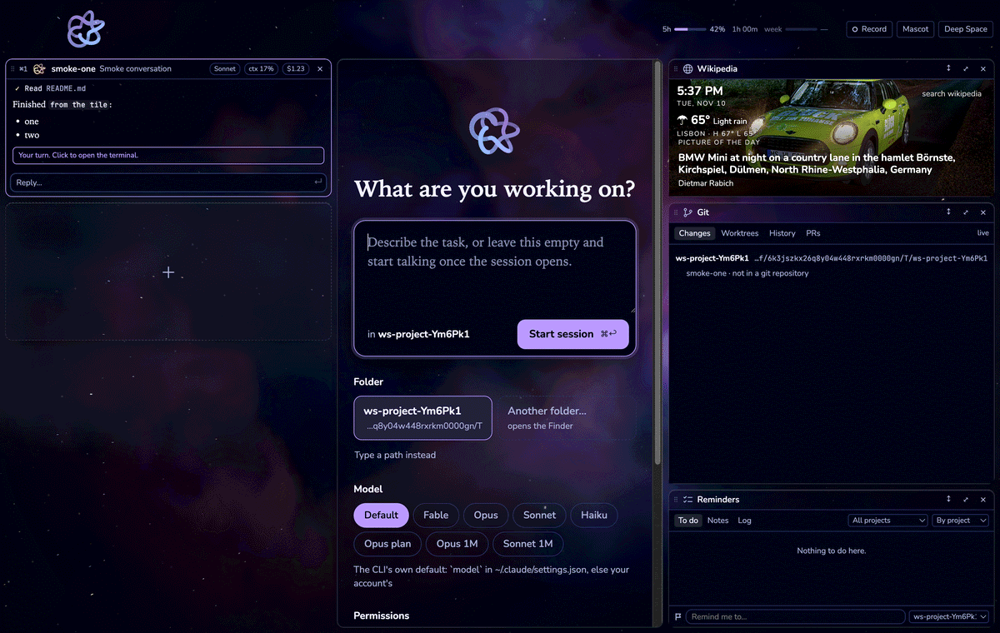

One window
Every session is the real claude or codex command, unchanged, in its own terminal. Workshop puts them in a column, shows each conversation as it happens, and keeps them running after you quit. The session you are on fills the middle. On the right is a column of tiles.

- Sessions on the left, most recent first, Claude Code and Codex alike: what each said, its context (and cost, for Claude Code), and the Knot showing whether it is working or waiting for you.
- The middle is the session you are on, a terminal. A tile can open there at reading size, or you can start a new session in a folder or a fresh worktree.
- Tiles on the right: Git, Reminders, Today with the weather, and whatever you build or install from the marketplace. Any tile can open large in the middle, or pop out into a small square you drag anywhere.
Tiles anyone can write
A tile is a folder: a manifest and a web page. Drop the folder in and it runs. Write one with any web stack, share it from your own repository, and list it in the marketplace for anyone to install. No build step ever runs on the user's machine.
{
"id": "focus-timer",
"name": "Focus timer",
"version": "0.1.0",
"workshop": "^1",
"author": "you",
"hint": "Twenty-five minutes, then a break",
"icon": "icon.svg",
"entry": "dist/index.html",
"permissions": {
"storage": true,
"notify": true
}
}The fastest way in: press + at the foot of the tile column, open Yours, and fill in Build a new tile. Workshop copies a working starter into a new folder and starts a session there to build it with you. The tile reloads every time a file changes.
Or from the shell, with a folder of your own:
node bin/workshop.mjs tile dev ./focus-timer
node bin/workshop.mjs tile check ./focus-timerMarketplace
Tiles people have built and listed. Each one lives in its author's own repository; the marketplace pins the exact commit you get, checks it the way workshop does before it loads a tile, and shows you everything it asks for before you install. In workshop: press + at the foot of the tile column and open Marketplace.
Reading the index…
Comes with workshop
List your tile
Push your tile to its own repository, then open a pull request that adds one entry to the index. A check runs core's own rules on the commit you pin and lists what it asks for; it is listed when the check passes. A tile that reads your conversations and also reaches the network is read by a person first.
Nothing a stranger wrote gets your Mac
Each tile runs in its own sandboxed page, on its own origin, with no Node, no files and no network. It reaches workshop through one object, window.workshop, and only for what its manifest asks. You see the list before it runs.
- storage
- Its own saved data, 5 MB
- net
- https to the hosts it names, and nowhere else
- sessions
- See your sessions; open the new-session form; type into one
- door
- Let a session call it: from the shell in Claude Code, as an MCP tool in Codex
- usage
- Your rate-limit windows, and each session's context and cost
- notify
- A badge, a Mac notification, a nudge on the Knot
- files
- Read only the folder or file you pick for it
- camera, microphone
- Passed to the macOS prompt
- overlay
- Cover the window for a moment, after a click
- music
- What Spotify or Music is playing, and the controls
- oauth
- Sign you in to a service; workshop catches the redirect
- transcripts
- Read your sessions' conversations, with a loud warning first
A second, trusted tier adds a Node program with full access to the Mac. Only tiles that ship with workshop may use it (Git does, to run git); any other tile that asks is refused.
The Knot
Workshop's mark is a cinquefoil, the (2,5) torus knot, drawn live. On each session its size, speed and colour say what that session is doing, so a glance down the column tells you who needs you. Press one to see it call for attention.
Prefer a fox? Any pixel-art sprite sheet can stand in for the Knot. The setup screen recommends Elthen's 2D Pixel Art Fox Sprites, which you download from him yourself; workshop only knows how to lay the sheet out, and never ships his art.
Run it from source
You need a Mac, Node 22 or later, tmux, and Claude Code installed and logged in. Codex is optional: once codex is on your PATH and logged in, the new-session form offers it.
git clone https://github.com/DoshaLabs/workshop cd workshopnpm installnpm run dev
Or build the Mac app into /Applications with npm run install-app. It offers its own updates when the repository it was built from changes.
Where it is
Working now
- Sessions: start, park, resume, ⌘1–9, each conversation live in its tile
- Codex sessions beside Claude Code ones: approvals, subagents, commits and tiles, with Stop where Claude Code has pause
- Answer a session's permission prompts from its tile, or pause a Claude Code session before its next step
- A session's subagents and helper sessions as one pack under it, each one killable
- Both plans' rate-limit windows in the top bar
- The marketplace: an index, and install, update and remove from the + menu
- The tile sandbox and the whole bridge above; tiles open large or pop out
- Git (Changes, Worktrees, History), Reminders, Today
- Build a tile with Claude,
tile dev,tile check - A preview pane for files a session points at; a screen recorder for 9:16 clips or the session itself
- A Mac app built from source that updates itself; Deep Space and the other themes; the Knot and sprite packs
Not yet
- A download and an install script
- Git's PRs tab
- Spend, Files and web-app tiles
- Rankings: most installed, most used